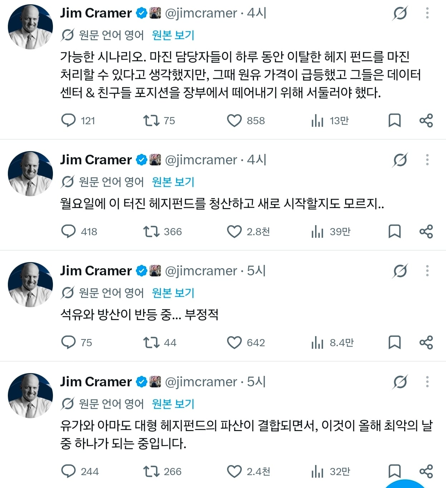

만약 청산이 끝났다면 레오폴드가 청산당했을때처럼 다시 상승이 시작될수 있지만 현재 유가나 인플레이션등 경제관련적으로 악재가 계속되고 하방압력을 버티지 못한 펀드들이 연쇄적으로 청산하고 대량으로 마진콜이 발생하게 된다면...

아니면 트럼프가 계엄때려서 다같이조져지거나

만약 청산이 끝났다면 레오폴드가 청산당했을때처럼 다시 상승이 시작될수 있지만 현재 유가나 인플레이션등 경제관련적으로 악재가 계속되고 하방압력을 버티지 못한 펀드들이 연쇄적으로 청산하고 대량으로 마진콜이 발생하게 된다면...
아니면 트럼프가 계엄때려서 다같이조져지거나
아직 신용 많이 남았고 월요일에 반대매매 많이 나올거같음
나는 버틴다고 보는게 미국 중간선거가 코앞임
트럼프가 완패하고 싶지 않으면 어떻게든 막을꺼임
눈치없이 한탕하려는 월가애들 줘팰 정도 힘은 남았음
우리나라도 신용청산이 많이 됐다고 하던데